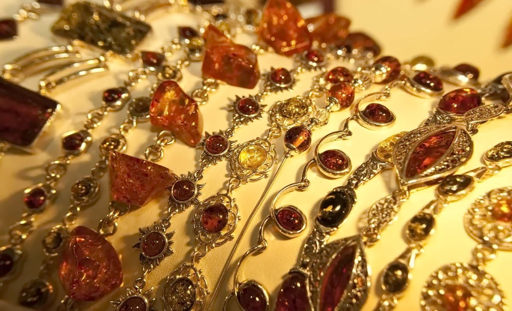
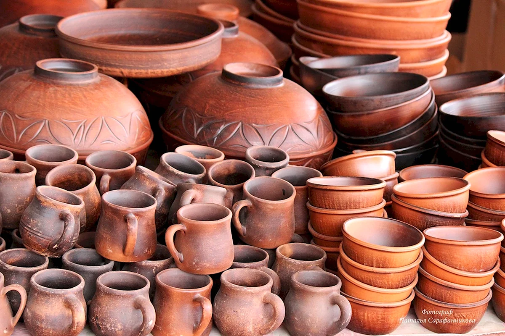
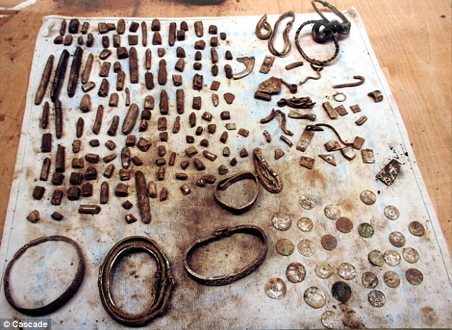
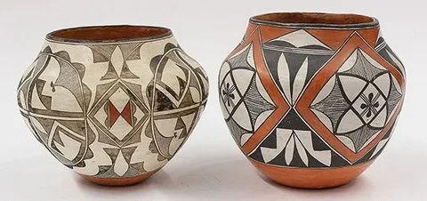
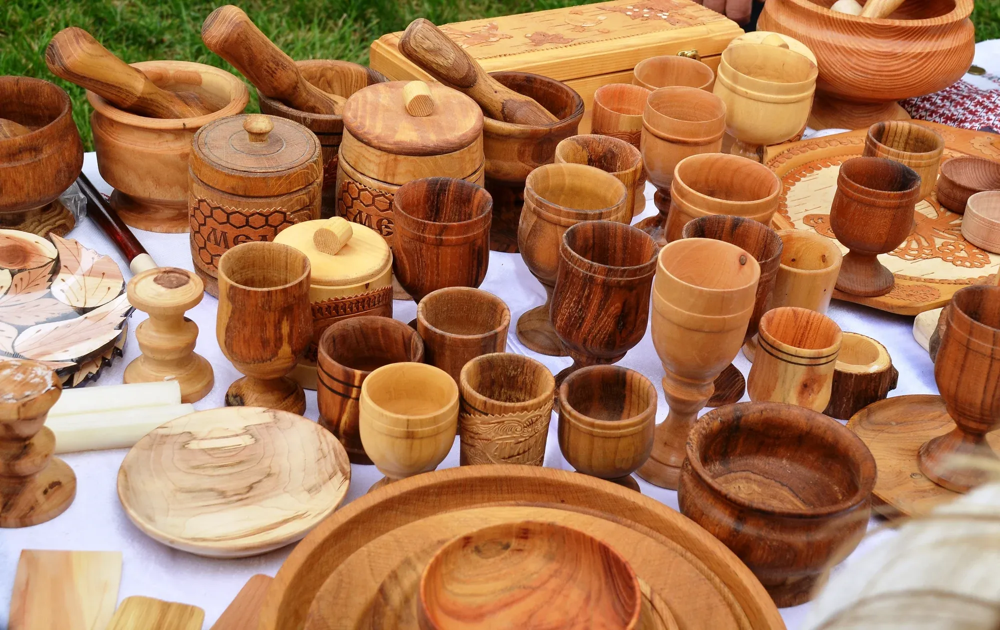
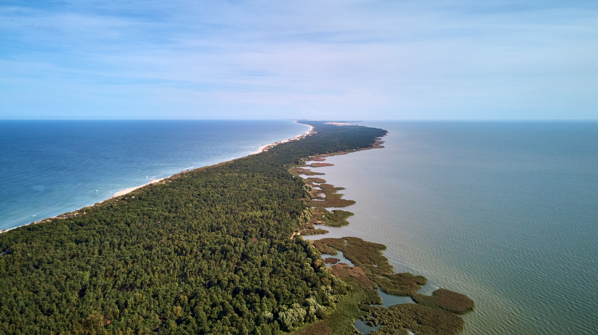
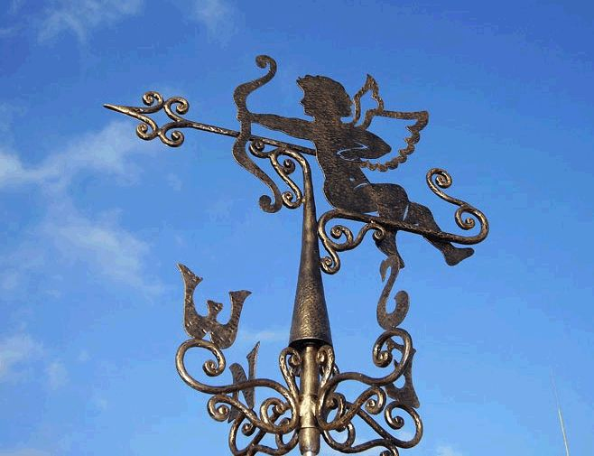
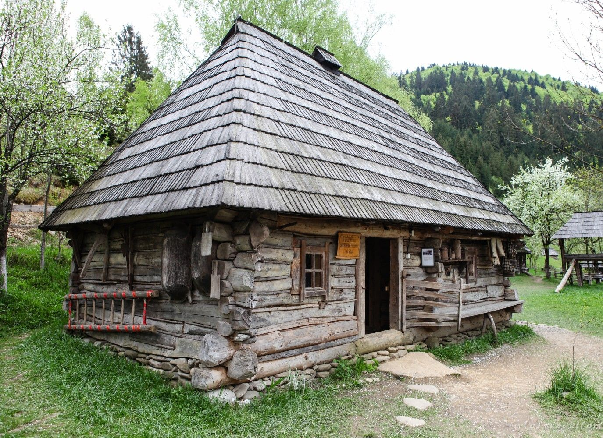
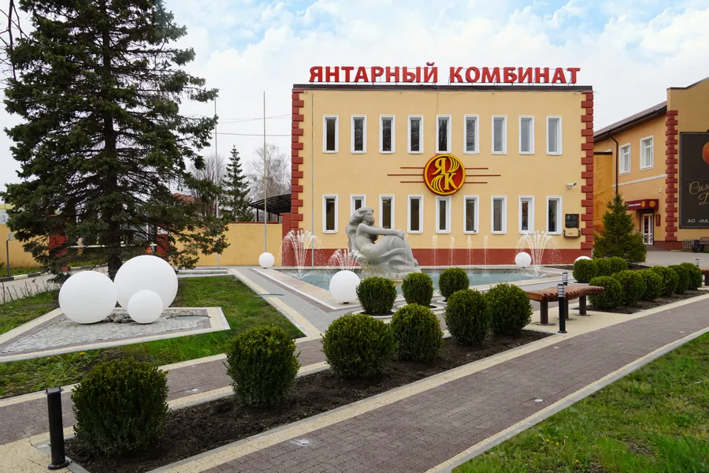
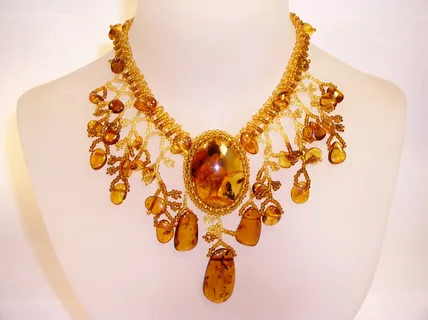

Архаичные основы: Ремесленные традиции балтских культур до прихода пруссов
Ремесленное искусство, формирующееся на территории современной Калининградской области, имеет глубокие архаичные корни, уходящие в эпоху неолита. Эти первые формы ремесел были неразрывно связаны с необходимостью выживания и позднее — с зарождением сложных общественных структур и торговых связей. Основой материальной культуры того времени стала обработка местных природных ресурсов, что заложило фундамент для будущих ремесленных школ.
Наиболее древними свидетельствами такого ремесленного мастерства являются находки, относящиеся к культуре Нарвы (6–3 тыс. до н.э.), которая охватывала обширные территории от Балтийского моря до Восточной Европы. Археологические исследования на Самбийском полуострове и других частях региона раскрывают удивительный уровень технической и художественной подготовки этих ранних сообществ.



Янтарный путь и торговые связи
Среди наиболее значимых находок — изделия из янтаря, которые свидетельствуют о высоком уровне его добычи и обработки. Из необработанного сырья мастера культуры Нарвы изготавливали разнообразные предметы: бусы, подвески, диски, кольца и даже фигурки людей и животных. Это указывает на то, что уже 4-5 тысяч лет назад янтарь играл важную роль в жизни местного населения, будучи одновременно украшением, товаром и объектом мистического почитания.
Позже, в бронзовом веке, ремесленная культура региона продолжила свое развитие, и центры добычи и обработки янтаря сместились в такие места, как Швенто-Джие, Жёдкранте и Нидде на Самбийском полуострове, где он добывался в больших количествах. Это время также знаменует собой усиление торговых связей с другими культурами. Янтарь стал одним из главных экспортных товаров, который шел по так называемому "Янтарному пути" в Римскую империю и далее в Среднюю Азию и Китай.
Развитие ремесел в железном веке
В железном веке, в период с 5 века до н.э. по 5 век н.э., ремесленные традиции стали еще более сложными и специализированными. Эпоха принесла с собой новые материалы и технологии. Археологические данные показывают, что ремесленники этого периода активно использовали металл.
Одновременно развивалось производство металлических украшений, таких как булавки, кольца и фибулы. Булавки прошли долгий путь эволюции: от простых костяных изделий III тысячелетия до н.э. они перешли к бронзовым и железным формам с головками различных конфигураций (шаровидная, спиральная, бочкообразная).
Ремесла древних балтов
| Ремесло | Периоды развития | Характерные изделия и техники |
|---|---|---|
| Обработка янтаря | Неолит (6-3 тыс. до н.э.) – по настоящее время | Бусы, подвески, диски, фигурки; добыча в Швенто-Джие, Жёдкранте |
| Гончарное дело | Неолит – железный век | Горшки с шнуровым отпечатком, насечками; ромбы, "чешуя" |
| Ткачество | Неолит – средневековье | Шерстяные платки с узорами "зигзаг", "чешуя"; карточное ткачество |
| Металлообработка | Бронзовый век – средневековье | Булавки (костяные, бронзовые, железные), кольца, фибулы (с мотивами змеи, коня) |
| Косторезное дело | Неолит – средневековье | Миниатюрные ткацкие инструменты из янтаря, амулеты-гребешки ("комблики") |
Прусское наследие: Ремесла и культурные преемственности в Восточной Пруссии
С приходом в регион пруссов (протобалтов), которые заселили территорию будущей Восточной Пруссии после вытеснения протобалтов культурой гончарной посуды с рисунком (Brushed Pottery culture) в III–V веках н.э., ремесленные традиции вошли в новую фазу своего развития. Пруссы не только унаследовали многие техники от своих предшественников, но и адаптировали их, а также создали собственные уникальные стили и практики, которые оказали влияние на всю последующую историю региона.


Археологические находки, обнаруженные в Восточной Пруссии (ныне Калининградская область), свидетельствуют о том, что прусские ремесленники были мастерами в нескольких ключевых областях: гончарстве, деревообработке, ткачестве и обработке камня. Их продукция была не только функциональной, но и обладала ярко выраженным художественным оформлением, которое отражало их мировоззрение и культурные ценности.
Особое место в прусском ремесленном искусстве занимала обработка дерева. Хотя пруссы не были известны таким масштабным строительством, как их потомки, литовцы, сохранилась информация о некоторых деревянных изделиях. Например, были найдены змееголовые каменные мотыги, которые, вероятно, имели не только практическое, но и мистическое значение, и их рукояти были сделаны из дерева.
Трагическая судьба прусской культуры
Однако история пруссов закончилась трагически. В результате длительной войны с Тевтонским орденом и последующей политики ассимиляции, к XV веку старопрусский язык и культура исчезли как самостоятельные этнические явления. Большинство старопрусского населения либо было угнетено, либо ассимилировалось в немецкое население, основанное рыцарями.
Тем не менее, прусское наследие не было полностью стерто. Во-первых, прусские ремесленные техники и узоры были унаследованы их потомками — литовцами и куршанами, которые заселили эти же земли после отступления пруссов. Так, геометрические узоры, характерные для прусской керамики, можно найти в более позднем литовском и куршском текстиле.
Куршанская и литовская традиции: Искусство рыболовов и морских путей
Если прусское наследие является частью затерянной истории, то куршанская и литовская культурные традиции представляют собой живое, хотя и в значительной степени трансформированное, наследие, сосредоточенное преимущественно на Куршской косе — уникальном песчаном пляже, разделяющем Куршский залив и Балтийское море.



Основным занятием куршан было рыболовство. Для этого они создали специфическую технологию судостроения. Использовались плоскодонные рыболовные суда, известные как kurenkähne или kurenas, которые были приспособлены для лова в условиях мелководья и сильных ветров Куршского залива.
Куршанские флюгеры
Но самым узнаваемым и уникальным ремеслом куршан стали их флюгеры. В отличие от европейских флюгеров, служивших для определения направления ветра, куршанские флюгеры (Kurenwimpel) выполняли совершенно иную функцию. Они крепились на мачты их лодок не как ветрозащита, а как сложные опознавательные знаки, указывающие на деревню происхождения судна.
В 1800-х годах, когда прусское правительство пыталось контролировать рыболовство, разделив Куршский залив на зоны для предотвращения перелова, каждое судно должно было четко демонстрировать свой символ. Со временем эти флюгеры превратились из простых маркеров в сложные произведения деревянной резьбы, украшенные различными символами, отражающими местные легенды и верования.
Холм ведьм
Не менее важной частью куршанской и литовской культуры было деревянное зодчество и скульптура. Литовцы занимались строительством капелл и поклонных крестов, изготовлением прялок, веретен и деревянной посуды, такой как ложки и чашки.
Особое место занимает Холм ведьм (Raganų kalnas) в поселке Юодкранте на Куршской косе в Литве. Этот открытый скульптурный музей, основанный в 1979 году группой литовских народных художников, насчитывает более 80 деревянных скульптур, изображающих персонажей литовского фольклора, таких как ведьмы, духи и легендарная великанша Неринга.
Янтарное искусство: От древнего почитания до советской промышленной школы
Искусство обработки янтаря является, пожалуй, самым узнаваемым и значимым ремеслом в Калининградской области. Однако его история крайне противоречива и представляет собой уникальный пример того, как одна и та же природная ценность может быть воспринята и использована совершенно по-разному в зависимости от исторического контекста.
Древнее почитание
Янтарь как священный материал. Использование в качестве амулетов и ритуальных предметов. Находки миниатюрных ткацких инструментов из янтаря в куршских захоронениях.
Традиционное литовское ремесло
Изготовление бус, браслетов, кулонов и других украшений. Ремесло, передаваемое из поколения в поколение с использованием ручных методов обработки.
Советская промышленная школа
Создание Янтарного комбината в 1947 году. Массовое производство. Формирование Калининградской школы обработки янтаря с 1959 года.


Третий, и самый мощный этап, начался в 1947 году, после того как территория Восточной Пруссии вошла в состав СССР. В поселке Янтарный был создан Янтарный комбинат, и началось массовое производство. Это было новое, самое молодое русское народное ремесло, возникшее практически с нуля.
Первые изделия (1940–1950-е) были довольно простыми: бусы, браслеты, кулоны. Но в 1959 году вышел специальный указ СССР «О совершенствовании ассортимента, качества и художественного оформления янтарных изделий», который положил начало формированию Калининградской школы обработки янтаря.
Немецкое и советское влияния: Трансформация и возрождение ремесленных практик
История ремесел Калининградской области — это история постоянных трансформаций, вызванных сменой правящих эпох и этнических доминант. Влияние немецкого периода и последующая советская политика сыграли решающую роль в изменении и, в некоторых случаях, уничтожении традиционных ремесленных практик коренных народов.
Немецкое влияние
Немецкое влияние, установившееся после захвата этих земель Тевтонским орденом в XIII веке, было прежде всего институционализирующим. Немецкие рыцари и поселенцы принесли с собой развитые ремесленные гильдии, которые стремились взять под контроль все производственные процессы.
Это означало, что местные прусские ремесленники потеряли автономию и были вытеснены на периферию производства или ассимилированы. Гильдии регламентировали качество, цены и доступ к материалам, что привело к стандартизации продукции и подавлению местных уникальных традиций.
Советский период
Советский период оказал еще более глубокое и, возможно, более разрушительное воздействие на остатки традиционных ремесел. Политика Советской власти в отношении культуры и ремесел была двойственной. С одной стороны, она проводила политику фольклоризации, собирая и систематизируя остаточные элементы народного искусства, что привело к созданию музеев и сборников.
С другой стороны, эта же власть целенаправленно подавляла те аспекты ремесленных практик, которые были связаны с религиозностью, классовой принадлежностью или имели потенциально реакционный характер. Ремесленные традиции коренных групп, такие как куршане, подверглись трансформации или полному исчезновению.
Современное возрождение
В последние десятилетия происходит медленное возрождение интереса к этим утраченным традициям. Современные практики направлены на сохранение и популяризацию остатков ремесленного наследия. В музеях, в первую очередь на Куршской косе, организуются выставки, посвященные традиционным ремеслам куршей и литовцев.